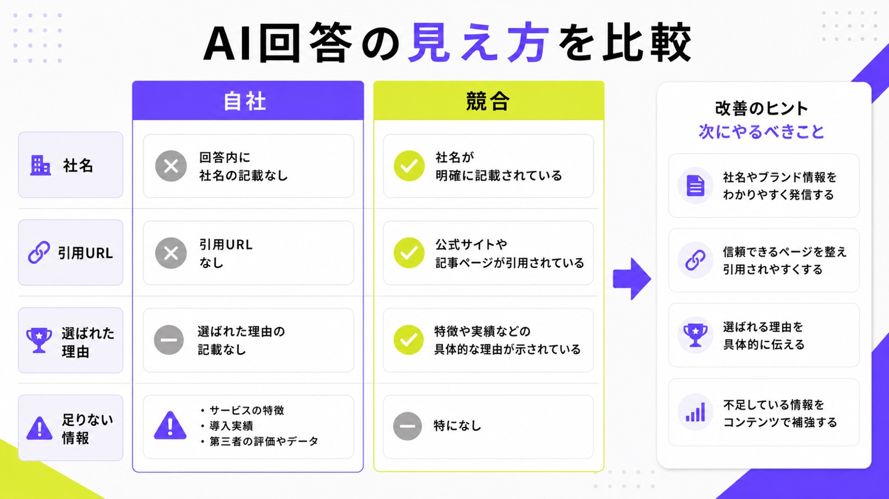
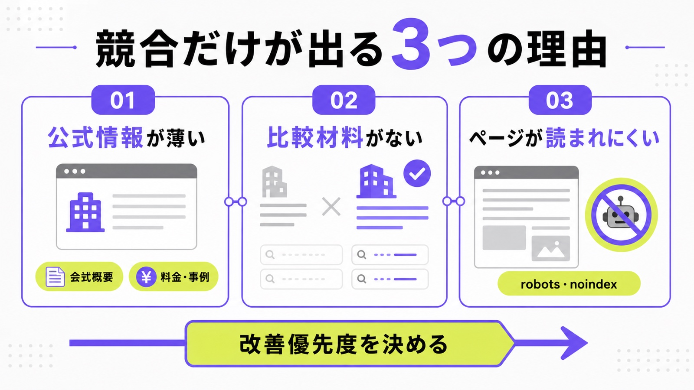
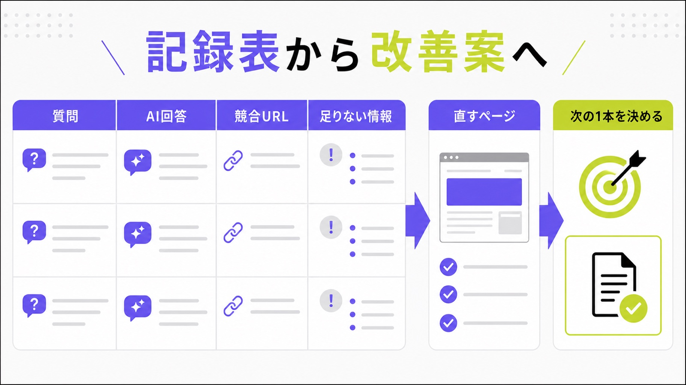

AI検索の競合分析とは？ChatGPT・Geminiで自社が出ない理由を調べる方法

ChatGPTやGeminiで自社に近い質問をしたとき、競合会社だけが紹介されて、自社名が出てこないことがあります。この状態は、単に「AIに嫌われている」のではなく、AIが自社を説明する材料を見つけられていない可能性があります。
AI検索の競合分析では、AI回答に出た会社名、引用URL、選ばれた理由、自社に足りない情報を表にします。先に全体像を知りたい方は、LLMOモニタリングや生成AIに引用される方法もあわせて確認してください。
この記事では、シート候補の「調査プロンプトと記録表を提供」という切り口に沿って、専門ツールなしでも始められる調査方法と、AIMAで改善まで進める方法をわかりやすく説明します。
目次

AI検索の競合分析とは
AI検索の競合分析とは、ChatGPT、Gemini、Perplexity、Google AI Overviewsなどの回答で、自社と競合がどう扱われているかを調べる作業です。SEO順位を見るだけでは分からない「AI回答の中の見え方」を確認します。
AI回答の「出た・出ない」だけで判断しない
AI回答に自社名が出たかどうかだけを見ると、判断を間違えます。社名は出ていても、根拠リンクが競合サイトや比較メディアに向いている場合があります。逆に社名が出ていなくても、競合のどの情報が評価されたかを見れば、直すべきページが分かります。まず見るべきなのは、回答本文、引用URL、競合名、選ばれた理由の4つです。ここを並べると、自社に足りない材料が見えます。

調べる対象は主要AIごとに分ける
同じ質問でも、ChatGPT、Gemini、Perplexity、AI Overviewsでは答え方が変わります。あるAIでは自社が出て、別のAIでは競合だけが出ることもあります。そのため、1つのAIだけを見て「できている」「できていない」と決めないでください。最初は、見込み客が使いそうな2〜4種類のAIを選び、同じ質問で比べます。AIごとの癖を見るより先に、同じ質問で横並びにすることが大切です。
“There are no additional requirements to appear”
競合が出て自社が出ない主な理由
AI回答に競合だけが出る原因は、ひとつではありません。多くの場合、公式情報の薄さ、比較材料の不足、検索エンジンに読まれる土台の問題が重なっています。ここでは、最初に確認したい原因を3つに分けます。
公式情報が薄く、AIが根拠を見つけにくい
AIは、会社名だけで候補を選んでいるわけではありません。何をしている会社か、誰に向いているか、料金はいくらか、どんな実績があるか、どの地域や業種に強いかを読んで判断します。公式サイトに抽象的な説明しかないと、AIは比較メディアや競合ページのほうを使いやすくなります。まず会社概要、サービスページ、料金、事例、FAQを見直し、公式サイトの説明力を上げる必要があります。
比較・料金・事例・FAQが不足している
AIに「おすすめ会社」「比較」「費用」「選び方」と聞く人は、すでに複数社を比べています。このとき、料金や支援範囲、向いている会社、向かない会社、よくある質問がないページは、AIにとって説明しにくい材料になります。競合が料金表、事例、FAQ、比較軸を出しているなら、自社も同じ土俵で判断材料を出す必要があります。ただし、真似をするのではなく、自社だけの強みを具体的に出すことが大切です。
クロールや検索の土台でつまずいている
AI検索対策といっても、基本は検索エンジンやAIクローラーがページを読める状態にすることです。noindex、robots.txt、古いcanonical、画像だけの重要情報、JavaScriptでしか見えない本文などがあると、内容が良くても候補に入りにくくなります。OpenAIの検索系ボットやGoogle検索に読まれる入口を確認し、重要ページを読める形にします。最初に見るのは、読めるページかどうかです。
“OAI-SearchBot is used to surface websites”

AI検索の競合分析を自社で始める手順
最初から高いツールを入れなくても、少ない質問数なら表で始められます。大事なのは、思いつきで質問せず、毎月同じ条件で比べることです。ここでは、AIMAでも初期確認に使う考え方を簡単に整理します。
質問リストを10個に絞る
最初に、見込み客がAIに聞きそうな質問を10個ほど作ります。例として「中小企業向けのLLMO会社は？」「AI検索対策を月額で頼むなら？」「大阪でAI検索対策に強い会社は？」「ChatGPTに会社名を出すには？」のように、課題、費用、比較、地域、業種を混ぜます。質問が多すぎると続かないので、まずは売上に近い質問だけに絞ってください。
社名・引用URL・評価理由を表にする
質問を入れたら、回答に出た自社名、競合名、引用URL、評価理由を表にします。自社が出たかだけでなく、どんな言葉で説明されたかも残します。「安い」「実績が多い」「BtoBに強い」「診断ができる」のような評価文があれば、それがAIに伝わっている印です。逆に誤った説明がある場合は、誤情報の修正候補としてメモします。詳しくはAI検索流入の計測方法も参考になります。
| 記録する項目 | 見ること | 次の作業 |
|---|---|---|
| 質問文 | 見込み客が本当に聞きそうか | 課題・費用・比較・地域で分ける |
| 出た会社名 | 自社と競合の表示差 | 出ない質問を優先して直す |
| 引用URL | どのページが根拠になったか | 自社の根拠ページを強くする |
| 評価理由 | AIが何を強みと見たか | 料金・事例・FAQを足す |
競合ページの共通点を改善案に変える
競合が出ている理由を見つけたら、ページの共通点を拾います。料金表がある、事例が具体的、FAQが細かい、会社情報が詳しい、外部掲載が多い、比較記事で紹介されているなどです。ここで大切なのは、競合の文章をまねることではありません。競合にあって自社にない判断材料を見つけ、自社の一次情報として足すことです。分析は、改善案に変えて初めて価値があります。

“looking for pages to add to our index”
AIMAでできる競合分析と改善
AI検索の競合分析は、調べて終わりにすると効果が出にくいです。大事なのは、調査結果を記事、FAQ、サービスページ、料金ページ、内部リンク、構造化データの改善につなげることです。AIMAでは、この調査から修正までを小さく回します。
月5万円で調査から記事修正まで回す
AIMAは、LLMOに特化した支援を月額5万円で提供しています。相談回数の上限なし、記事作成・記事修正込み、最低契約期間なしなので、競合分析で見つかった不足点をすぐ直せます。たとえば「料金ページが弱い」「FAQが少ない」「比較質問で出ない」「競合だけ引用される」といった課題を、毎月優先順位を決めて改善します。調査だけで止めず、ページ修正まで進めることがAIMAの強みです。
自社で確認したい方は、まず無料LLMO診断で弱い質問を見つけるのがおすすめです。サイト全体の設計も見直したい場合は、AI検索に強い企業サイト設計の記事も参考になります。
AI検索の競合分析に関するよくある質問
AI検索の競合分析は無料でもできますか？
少ない質問数なら無料でも可能です。ChatGPT、Gemini、Perplexity、Google AI Overviewsで同じ質問を入れ、自社名、競合名、引用URL、回答理由を表に残せば、最初の弱点は見えます。ただし、質問数が増える、毎月比較する、改善優先度まで決める場合は、専門会社やツールを使うほうが楽になります。
競合名が出たら、すぐ会社比較記事を作るべきですか？
すぐ比較記事とは限りません。まず、AIが競合を出した理由を確認します。料金、実績、事例、FAQ、第三者評価、地域情報など、自社ページに足りない材料を先に直すほうが早い場合があります。比較記事は有効なこともありますが、公式サイトの基本情報が薄いまま作ると、根本的な改善になりにくいです。
まとめ
AI検索の競合分析は、AI回答で競合だけが出る理由を調べ、次に直すページを決めるための作業です。社名が出たかだけでなく、引用URL、評価理由、競合ページの共通点、自社に足りない情報を見ます。
最初は、10個ほどの質問で十分です。ChatGPT、Gemini、Perplexity、AI Overviewsで同じ質問を試し、表に残せば、料金、FAQ、事例、会社情報、技術設定のどこが弱いかが見えてきます。
AIMAは、LLMO特化、月額5万円、相談無制限、記事作成・修正込みで、競合分析から改善までまとめて支援します。まずは無料LLMO診断またはお問い合わせからご相談ください。